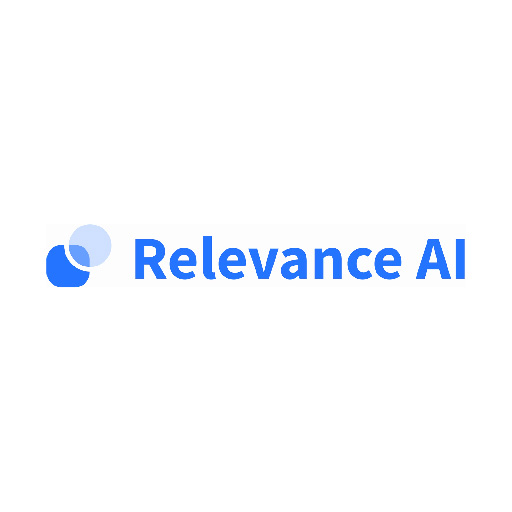

<main>
    <div class="container">
        <h1 class="my-5 text-center">Our Partners</h1>
        <div class="row my-5">
            <div class="col-sm-4 mb-3">
                <h3 class="text-center">Corinium</h3>
                
                <p>Corinium runs over 190 executive level, content-rich conferences & digital events globally, connecting you with the people, technologies and insights that can help you achieve your goals quicker and more effectively. They run events for people in the data and technology community including various CDAO (Chief Data Analytics Officer) and CISO (Chief Information Security Officer) events. Their reach is vast with over 500,000+ executives, 190+ events across 52+ countries.</p>
                <a href="https://www.coriniumintelligence.com/" class="btn btn-primary">Corinium</a>
            </div>
            <div class="col-sm-4 mb-3">
                <h3 class="text-center">Relevance AI</h3>
                
                <p>Our vision is to give shape to the world’s qualitative data, making it simple to discover and understand.</p>
                <p>80% of data is qualitative, in the form of text, images, audio or video.
                    <p>Using the power of AI vectors, we can reveal the semantics of qualitative data with minimal labelling or training, making it easier and more affordable for businesses of any size.</p>
                    <p>Our AI-first semantic search product enables any business to have Google-like search functionality on their website, app or enterprise software solution without the need to code or configure.</p>
                    <p>That's just one small but powerful application of what our tech can do. Talk to us about what we can do together to unlock the value of your qualitative data.</p>
                    <p>Or learn more on our website: https://relevance.ai/
                    </p>
                <a href="https://relevance.ai/" class="btn btn-primary">Relevance AI</a>
            </div>
            <div class="col-sm-4 mb-3">
                <h3 class="text-center">UNSW DataSoc</h3>
                
                <p>DataSoc is one of UNSW’s fastest growing societies in one of the world’s fastest growing industries. Our goal is to discover how data shapes the world around us. We aspire to connect, educate and support our members by running social and career events alongside industry partnered educational workshops. Uniting mathematicians, econometricians and computer scientists, UNSW Datasoc seeks to empower our members with knowledge and skills of data science, machine learning and artificial intelligence.</p>
                <a href="https://unswdata.com/" class="btn btn-primary">UNSW DataSoc</a>
            </div>


        </div>
        <div class="row my-5">
            <div class="col-sm-4 offset-sm-4 mb-3">
                <h3 class="text-center">CoderOne</h3>
                
                <p>Coder One is the home for AI programming games played by bots, and the engineers behind them. We run the AI Sports Challenge: an AI programming tournament where engineers go to build their skills, win prizes, and get noticed by top technology employers.        </p>
                <a href="https://www.gocoder.one/" class="btn btn-primary">CoderOne</a>
            </div>
        </div>
    </div>
</main>